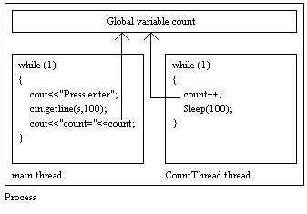

Win32 Programming
Features for Windows NT and Windows 95
by Marshall Brain
Threads
Threads are
one of the most exciting and useful features in Windows NT/95
and the Win32 API. Threads let you break up a single program into
multiple threads of execution. In this article you will learn
the basic concepts used to create threads in any Win32 program.
There are a number of ways that you might use threads in your own programs. Here are some ideas:
If you are moving to NT from UNIX, VMS, or a mainframe, then multi-processing is a familiar concept. Multi-threading may be new to you however. If you are moving from MS-DOS, then both multi-processing and multi-threading are probably new to you. Let's start by looking at what multi- processing and multi-threading actually mean from an operating system standpoint.
The MS-DOS operating system is a single-process operating system. It can run one program at a time. You load a program, work with it, quit it, and then run another. TSRs can, in certain situations, give an impression of multi-processing, but the problems that TSRs normally cause show that they are at best an illusion that MS-DOS was never intended to support.
Microsoft Windows 3.1, as well as Apple's Macintosh system, are cooperative multi-tasking operating environments. Both can run multiple programs (processes), at the same time. For example, you can run a word processor in one window, a spreadsheet in another window, and download a file from a BBS in a third window. The word cooperative is used because it is up to each program to properly relinquish control at appropriate times so that all of the processes appear to be working simultaneously. Cooperative multi-tasking works to some degree. However, a lengthy disk access or other undividable task performed by one program will tend to monopolize the entire system for a moment and the cooperation breaks down. This makes cooperative multi-tasking systems seem jerky in many cases. If one program locks up, the whole system often dies with it. As soon as one program locks, it cannot relinquish control to the others and everything stops.
UNIX is a preemptive multi-tasking operating system. The operating system, rather than individual applications, is in charge of giving CPU time to all of the running processes and it does so as it best sees fit. UNIX gives a process a time slice of CPU time--perhaps 20 milliseconds or so--and when that amount of time expires the operating preempts the process and gives the next slice of CPU time to another process. A UNIX machine can therefore have literally hundreds of processes running at one time and still feel very smooth to the user. If one process locks it has no effect on the others because the operating system is still in control of slicing up the CPU time.
Windows NT (and Windows 95) is a preemptively multi-tasking, multi-threaded operating system. Because it uses preemptive multi-tasking, it shares with UNIX the same smoothness of operation and process independence. Multi-threading goes one step further however. An individual program by default contains one thread, but it can break itself into several independent threads of execution so that, for example, one thread of an application can send a file to the printer while another is responding to user input. This simple change in the a program's design can significantly reduce any waiting that the user normally has to worry about during lengthy recalculations, screen painting, file reading and writing, etc.
Multi-threading also lets you take advantage of multiple CPUs available in many high-end NT machines. Say, for example, that you purchase an advanced RISC machine capable of using up to 10 CPU chips, but initially you purchase only one CPU for it. As part of your learning cycle you write a simple Mandelbrot set program, and you find that for a window of a certain size it takes 15 seconds to redraw the image of the Mandelbrot set.
Now you add nine more CPU chips to the machine. When you rerun the Mandelbrot program, you will find that it still takes almost 15 seconds to execute. NT has the ability to run different threads on different CPUs, but it cannot do anything with a single threaded program but devote one CPU to it. There is no way for NT to divide a single thread across CPUs. Since NT is itself multi-threaded, the Mandelbrot program will speed up slightly because it is not competing with NT's system threads for CPU time. However, any one program cannot harness more than one tenth of the CPU power in a 10-CPU machine unless it is multi-threaded.
If you multi-thread your Mandelbrot program, NT can run the separate threads on separate CPUs, and this allows it to take full advantage of all of the available CPU power. For example, if the Mandelbrot program breaks itself into 10 threads, then one thread will run on each CPU and the program will run ten times faster. There is no reason to use more than ten threads on a 10-CPU machine, because each thread incurs a very slight amount of overhead and it is therefore wasteful to have more than 10. However, you could break the program into 100 threads if you like, or use one thread for each scan-line of the drawing, if that makes things conceptually easier for you in a certain application. There are many cases where breaking an application into multiple threads actually makes the whole program much easier to understand, and threads turn out to be remarkably easy to create.
Processes in NT are not nearly as interesting as threads. A program can create a separate process, but the new process is completely and totally separate from the original program. Unlike UNIX, where a new process obtains a complete copy of the variable space of the original process, a new process in NT can at most inherit copies of specifically indicated handles. Generally you use a process when you want to start another independent program from within a running program. For example, if you wanted to write your own version of the Program Manager or File Manager, you would use processes to launch other applications from your program.
When any process starts in NT, it by default contains one thread of execution. For example, when you type "notepad" on the command line or double click on notepad's icon in the Program Manager, NT creates a process, and that process has one thread that "runs" notepad's code. The process is essentially a container for the global variables, environment strings, the heap owned by the application, and the thread. The thread is what actually executes the code.
All threads in one process share the variable space of their parent process. Each thread also has its own stack. When you create a new thread within a process, it has access to all of the global variables and the heap of the parent process. All of the problems that arise from the careless use of globals in a normal program are therefore compounded in a multi-threaded program, because now several different threads can modify the same global variables independently of one another. To solve the problems that tend to arise in such situations, there are synchronization mechanisms built in to the Win32 API that help you to guarantee exclusive access to global values.
For many people, the whole idea of creating multiple threads within a single process requires some mental adjustment. Let's start by looking at several extremely simple examples to see how threads fundamentally work in the Win32 API.
The code below contains an extremely simple single-thread program. In this program, the code prints the value of the global variable named count each time the user presses the return key. Nothing in the program changes count, so the program always prints 0. There is no magic here:
#include <windows.h>
#include <iostream.h>
UINT count;
void main(void)
{
CHAR retStr[100];
count=0;
while(1)
{
cout
<< "Press <ENTER> to display the count... ";
cin.getline(retStr, 100);
cout << "The count is: " << count << endl
<< endl;
}
}
Now let's add a thread to the code, as shown below. A thread in NT is simply a function that executes in the background. The function CountThread in the code below increments the global variable named count and then sleeps for 100 milliseconds. When you run the program, you will find that each time you press the enter key, count has increased. The thread runs in the background incrementing count, while the original thread is responding to user input. The program is doing two things at once.
#include <windows.h>
#include <iostream.h>
volatile UINT count;
void CountThread()
{
while(1)
{
count++;
Sleep(100);
}
}
void main(void)
{
HANDLE countHandle;
DWORD threadID;
CHAR retStr[100];
count=0;
// create a thread which
// executes the "CountThread" function
countHandle=CreateThread(0, 0,
(LPTHREAD_START_ROUTINE) CountThread,
0, 0, &threadID);
if (countHandle==0)
cout << "Cannot create thread: "
<< GetLastError() << endl;
while(1)
{
cout
<< "Press <ENTER> to display the count... ";
cin.getline(retStr, 100);
cout << "The count is: " << count << endl
<< endl;
}
}
The arrangement of the main thread, the counting thread, and the global variable in the previous listing is shown below:

The code starts by creating the thread using the CreateThread function (see the Win32 on-line help files in VC++ version 2.0 or the NT SDK for a description of this function). The CreateThread function accepts the name of the thread function, the function to execute in the new thread. Here, the thread function is CountThread. The thread function can optionally accept one four-byte parameter. In the listing above the thread function uses no parameters, but if it did the parameter that the thread function receives is passed to CreateThread in the param parameter, and CreateThread in turn passes it on to the thread function. CreateThread returns both a thread ID and a handle to the thread. The thread ID is used to uniquely identify the thread system-wide, and is also accepted by a few functions such as AttachThreadInput.
You can control the initial size of the thread's stack using the stack parameter. Setting stack parameter to 0 causes the thread to start with a stack of the same size as its parent thread. The stack will grow as necessary, but growth is a wasteful activity so if you know that the thread will need a certain amount of space in its stack because of the size of its local variables, you should try to accommodate that from the start. It is also possible to start a thread so that it is originally suspended. In this case, the thread will consume no CPU time until some other thread unsuspends it with ResumeThread.
The Sleep function in the above listing provides an efficient way for a thread to delay itself. In a previous life you may have used a for loop or some similar mechanism to cause a delay, but as you know, for loops are unreliable and also extremely wasteful. As the for loop is spinning it consumes CPU cycles that could be put to better use. The Sleep function lets a thread delay itself without consuming any CPU cycles. A thread is totally suspended during a sleep.
Note the use of the volatile modifier on the count global variable. If you comment out the Sleep function in the thread and remove the volatile modifier, count may always be zero when you press the enter key. This phenomenon occurs because of strange side effects resulting from compiler optimizations. The compiler, for example, may use a register to store the count variable in the main thread, so changes to the value by the second thread are ignored. The volatile modifier is a way of telling the compiler that you do not want any optimizations applied to the variable, that you do not want it placed in a register, and that the value may change due to outside influences during evaluation. You will find it to be a very important modifier for global variables referenced by multiple threads.
The code shown below is another simple example of a background thread running separately from the main thread. This thread beeps in the background while the main thread waits for it to finish. The code shows how to pass an integer parameter to a thread, and also how to wait for a thread to complete.
// thread1.cpp
#include <windows.h>
#include <stdlib.h>
#include <iostream.h>
// The function to run in a thread
void HonkThread(DWORD iter)
{
DWORD i;
for (i=0; i < iter; i++)
{
Beep(200, 50);
Sleep(1000);
}
}
void main(void)
{
HANDLE honkHandle;
DWORD threadID;
DWORD iterations;
CHAR iterStr[100];
cout << "Enter the number of beeps to produce: ";
cin.getline(iterStr, 100);
// convert string into integer
iterations=atoi(iterStr);
// create a thread which
// executes the "HonkThread" function
honkHandle=CreateThread(0, 0,
(LPTHREAD_START_ROUTINE) HonkThread,
(VOID *) iterations, 0, &threadID);
// wait until the thread has finished
int count=0;
while ( WaitForSingleObject(honkHandle, 0)
== WAIT_TIMEOUT)
{
cout
<< "waiting for the thread to finish "
<< count++
<< endl;
}
}
When you run the above code, you should enter an integer value such as 5 when the program requests it. The main program will start the thread, passing it the value 5 through the parameter. The thread will run in the background, beep five times, and quit. Meanwhile, the main program is waiting for the thread to quit using the WaitForSingleObject function in a loop. Each time through the loop it increments an integer and prints it to stdout.
The WaitForSingleObject function is waiting on the thread handle for the thread to terminate. The value 0 passed in as the timeout value causes WaitForSingleObject to return immediately and indicate that either the thread has or has not completed. If the thread has not completed, WaitForSingleObject returns the value WAIT_TIMEOUT. In this configuration, we are using WaitForSingleObject simply to detect whether or not the background thread has finished.
It is possible to pass structures into a thread function by passing a pointer to the structure through the parameter, as shown below. The structure should be stable. That is, it should be a global variable, a static local variable, or allocated from the heap. The structure should not be a local variable of a function that might cease to exist during the run of the thread.
#include <windows.h>
#include <stdlib.h>
#include <iostream.h>
typedef struct
{
DWORD frequency;
DWORD duration;
DWORD iterations;
} honkParams;
void HonkThread(honkParams *params)
{
DWORD i;
for (i=0; i < params->iterations; i++)
{
Beep(params->frequency, params->duration);
Sleep(1000);
}
}
void main(void)
{
HANDLE honkHandle;
DWORD threadID;
honkParams params;
CHAR freqStr[100];
CHAR durStr[100];
CHAR iterStr[100];
cout << "Enter the beep frequency to produce: ";
cin.getline(freqStr, 100);
params.frequency=atoi(freqStr);
cout << "Enter the beep duration to produce: ";
cin.getline(durStr, 100);
params.duration=atoi(durStr);
cout << "Enter the number of beeps to produce: ";
cin.getline(iterStr, 100);
params.iterations=atoi(iterStr);
// create a thread and pass it the address of
//the "params" structure
honkHandle=CreateThread(0, 0,
(LPTHREAD_START_ROUTINE) HonkThread,
¶ms, 0, &threadID);
WaitForSingleObject(honkHandle, INFINITE);
}
In the above code, the three values entered by the user are placed in a structure that is then passed to the thread. The main function calls WaitForSingleObject to keep from terminating before the thread has completed. Without this call, the main function would return immediately, killing off both the main process and the threads.
The code below goes step further, and shows that it is possible to create multiple background threads using either multiple thread functions or a single thread function that is called several times.
#include <windows.h>
#include <stdlib.h>
#include <iostream.h>
typedef struct
{
DWORD frequency;
DWORD duration;
DWORD iterations;
} honkParams;
void HonkThread(honkParams *params)
{
DWORD i;
for (i=0; i < params->iterations; i++)
{
Beep(params->frequency, params->duration);
Sleep(1000);
}
GlobalFree(params);
}
void main(void)
{
HANDLE honkHandles[3];
DWORD threadID;
honkParams *params;
DWORD count;
CHAR freqStr[100];
CHAR durStr[100];
CHAR iterStr[100];
for (count=0; count < 3; count++)
{
// allocate memory for a "params" structure
params=(honkParams *) GlobalAlloc(GPTR,
sizeof(honkParams));
cout << "Enter the beep frequency: ";
cin.getline(freqStr, 100);
params->frequency=atoi(freqStr);
cout << "Enter the beep duration: ";
cin.getline(durStr, 100);
params->duration=atoi(durStr);
cout << "Enter the number of beeps: ";
cin.getline(iterStr, 100);
params->iterations=atoi(iterStr);
// create a thread and pass it the pointer
// to its "params" struct
honkHandles[count]=CreateThread(0, 0,
(LPTHREAD_START_ROUTINE) HonkThread,
params, 0, &threadID);
}
// wait for all threads to finish execution
WaitForMultipleObjects(3, honkHandles,
TRUE, INFINITE);
}
When you run the above code, the program asks you to enter a frequency and duration as well as the number of beeps. You can do this three times, so you will hear beeps from all three threads simultaneously if you set the number of beeps for each thread high enough to cause an overlap.
In the above code, a wait function is again used to keep the main function, and therefore the process, from completing before all three threads have finished. The WaitForMultipleObjects function does the same thing that WaitForSingleObject does, but it waits for all of the specified events to occur. WaitForMultipleObjects accepts an array of object handles, in this case handles from the three threads.
You can see from the examples given above that the use of threads, at least at a simple level, is not much more difficult than calling a normal function. The thread function executes as you expect, but it returns immediately and executes in the background, in parallel with the main thread of the application.